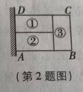
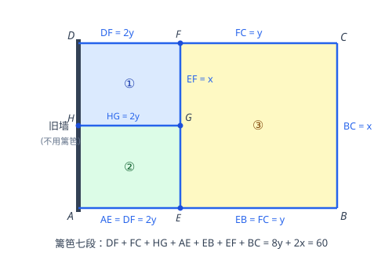

p34 篱笆围三块矩形区域 面积最大
最值问题
二次函数配方求最值面积最值不等式定范围
★★★☆

📷 点击查看原图
[2024·福州期中] 为了节省材料，某农场主利用旧墙（围墙足够长）为一边，用总长为 60 m 的篱笆围成了如图所示的①②③三块矩形区域，而且这三块矩形区域的面积相等，则 BC 长为________时，能围成的矩形区域 ABCD 的面积最大。
📌 知识点总结（点击展开／收起）
📌 知识点总结
| 知识点 | 说明 |
|---|
| 面积相等转化边长 | 三块面积相等 ⇒ 左矩形 AEFD 面积 = ③ 面积的 2 倍 ⇒AE=2BE |
| 篱笆分段求和 | 靠墙的 AD 不用篱笆；其余七段之和 =8y+2x=60 |
| 二次函数配方求最值 | S=−43(x−15)2+4675，开口向下，顶点即最大值 |
| 自变量取值范围 | 由 y>0 得 0<x<30，顶点 x=15 落在范围内，最大值有效 |
✍️ 解题过程
第一步：由"三块面积相等"推出边长关系。结合题图：①②上下排列在左侧矩形 AEFD 内（各占一半），③ 是右侧矩形 BCFE。三块面积相等，所以左矩形面积是③的 2 倍：
SAEFD=AE×BC,SBCFE=BE×BC⟹AE×BC=2×BE×BC⟹AE=2BE
第二步：设未知数，表示各段。设 BC=x，BE=CF=y，则 AE=DF=2y，AB=CD=3y。①②的分界线 HG 与 AE 等长，故 HG=2y。
第三步：篱笆七段之和 = 60。靠墙的 AD 不用篱笆，篱笆为 DF、FC、HG、AE、EB、EF、BC 七段（其中 EF=BC=x）：
2y+y+2y+2y+y+x+x=8y+2x=60⟹y=215−4x
第四步：写面积函数并配方。
S=AB×BC=3y×x=3(215−4x)x=245x−43x2
S=−43(x2−30x)=−43(x2−30x+225)+43×225=−43(x−15)2+4675
第五步：确定范围并取最大值。由 y>0 得 215−4x>0，即 x<30；又 x>0，所以 0<x<30。抛物线开口向下，顶点 x=15 恰在此范围内，所以：
x=15 时，Smax=4675=168.75（m2）
检验：x=15 时 y=215−415=415，篱笆 =8×415+2×15=30+30=60 ✓；三块面积均为 y×x=415×15=56.25 ✓。
辨析（图中手写答案 "10" 不对）：x=10 时 S=−43×25+168.75=150<168.75，不是最大值。正确答案为 15。

📷 点击查看原图
图：篱笆七段结构（左侧 AD 靠墙不用篱笆），AE=DF=HG=2y，EB=FC=y，EF=BC=x
✅ 答案：BC=15 m 时，矩形区域 ABCD 的面积最大，最大面积为 168.75 m²